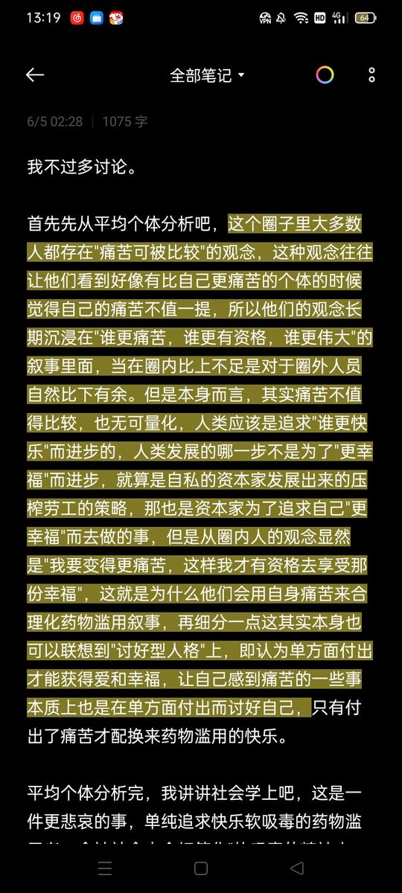

Angel
@for_4ngel
哦这是之前用在药圈的解构 但是这段内容是一样的，痛苦是无可量化的更别提比较了

无敌爆爆龙
@OvO332233
嗯……学一下环状线吧
在无敌爆爆龙的眼里
“苦痛，幸福”等感觉，不是一种比较的资本，也没有比较的必要。因为比苦永远有比你苦的，比幸福永远都有比你好的。
两者的比较只能让自己变得更难受或者更幸灾乐祸，不如积极的面对当下的生活
PS:对不起环状线老师，也感觉可能伤到浅葱 https://t.co/OB65w3RM9o